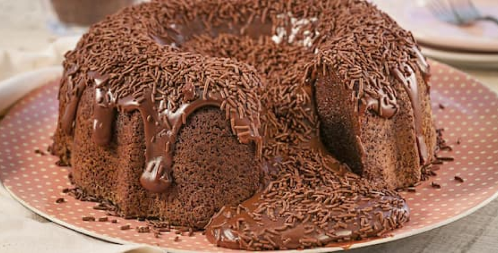

.png)
receitas deliciosas
receitas
algumas receitas
aprenda algumas receitas
site de receitas
Bolo de chocolate

INGREDIENTES
Massa
4 ovos
4 colhres (sopa) de chocolate em pò
2 colheres (sopa) de manteiga
3 xicaras (chà) de farinha de trigo
2 xicaras de (chà) de açùcar
2 colheres (sopa) de fermento
1 xicara (chà) de leite
CALDA
2 colheres (sopa) de manteiga
7 colheres (sopa) de chocolate em pò
2 latas de creme de leite com soro
3 colheres (sopa) de açúcar
MODO DE PREPARO
MASSA
Em um liquidificador adicione os ovos,o
chocolate em pò,a manteiga,a farinha de
trigo,o açùcar e o leite,depois bata por 5
minutos
Adicione o fermento e misture com uma
espàtola delicadamente.
em uma forma untada,despeje a massa e
asse em forno mèdio(180c) preaquecido
por cerca de 40 minutos.nao esqueça de
usar uma forma alta para essa receita:como
leva duas colheres de fermento,ela cresce
bastante! Outra soluçâo pode ser colocar
apenas uma colher de fermento e manter a
sua receita em uma forma pequena.
CALDA
EM uma panela,aqueça a manteiga e misture
o chocolate em pò atè que esteja homogêneo.
Acrescente o creme de leite e misture bem
atè obter uma consistência cremosa
desligue o fogo e acrecente o açùcar.
.png)
1 lata de leite condensado
1 lata de creme dee leite
1/2 xicara de suco de limão
(esse suco è puro mesmo,sem
àgua,è sò espremer limão)
modo de preparo
Coloqueno liquidificador o creme
leite (com soro mesmo) e o leite
condensado.
Bata um pouco e depois và acrescentando
o suco deb limão,aos poucos.
Ele vai ficar bem consitente,leve à geladeira
brigadeiro
.png)
1 caixa de leite condensado
1 colher (sopa) de margarina sem sal
7 colheres (sopa) de achocolatado
chocolate granulado.
MODO DE PREPARO
Em uma panela funda, acrescente o
leite condensado, a margarina e o achocolatado
(ou 4 colheres de sopa de achocolatado em pò).
Cozinhe em fogo mèdio e mexa atè que o brigadeiro
comece a desgrudar da panela.
Deixe esfriar e faça pequenas bolas com a mão
passando a massa no chocolate granulado.